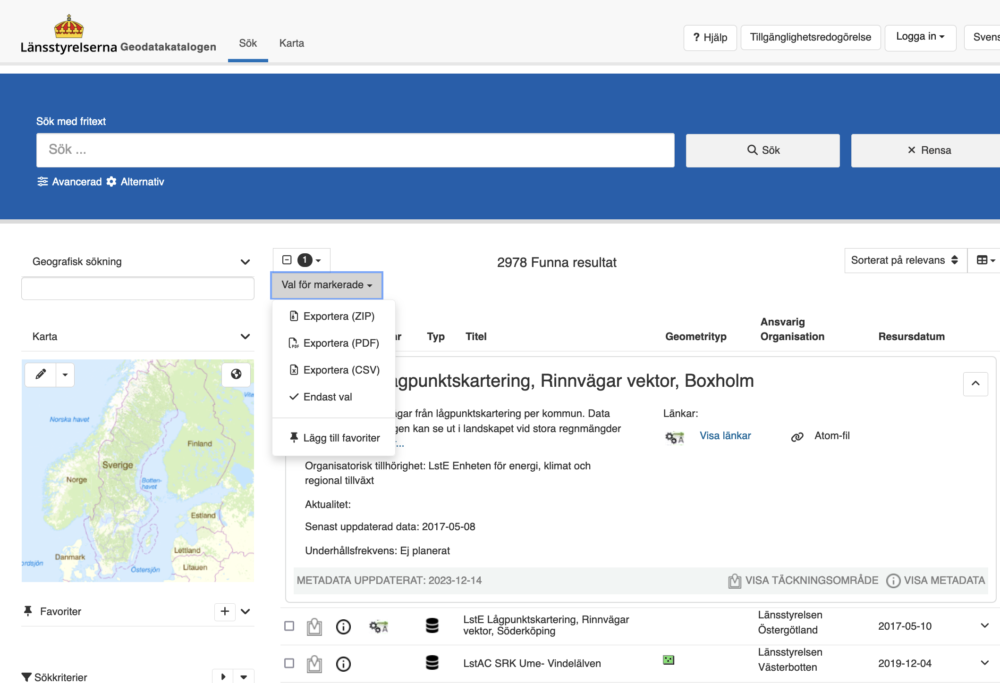
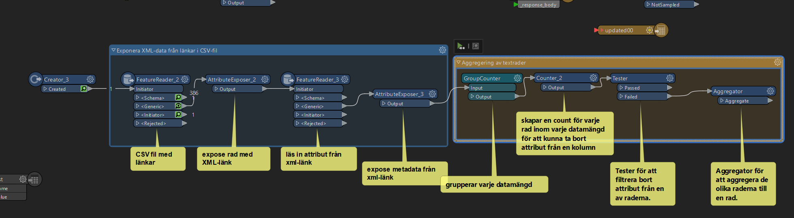
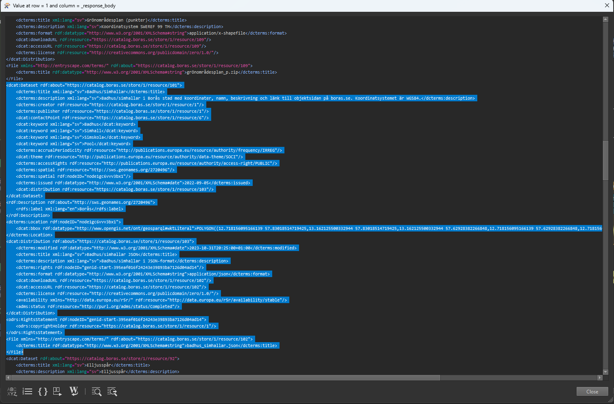
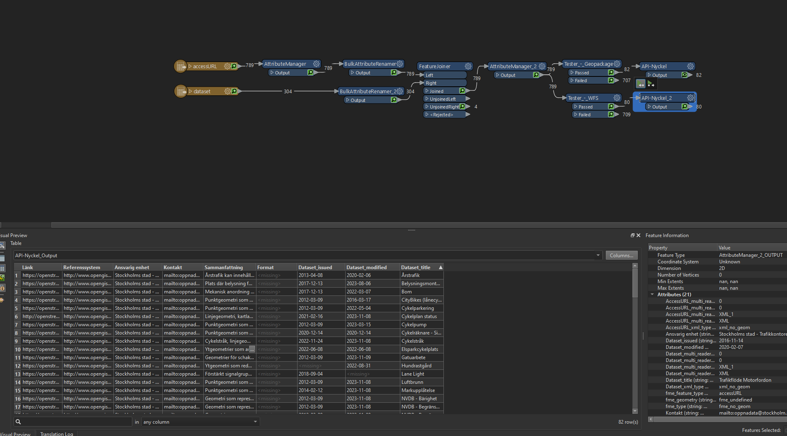
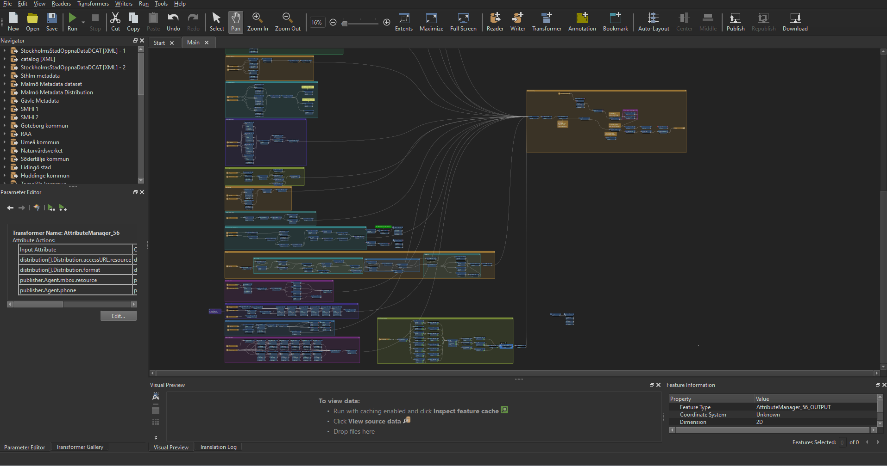
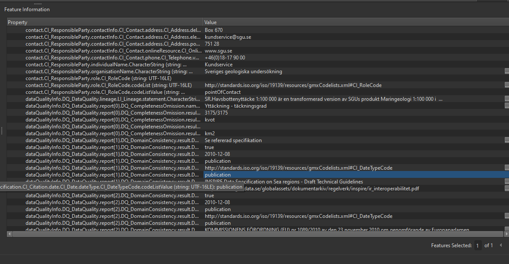
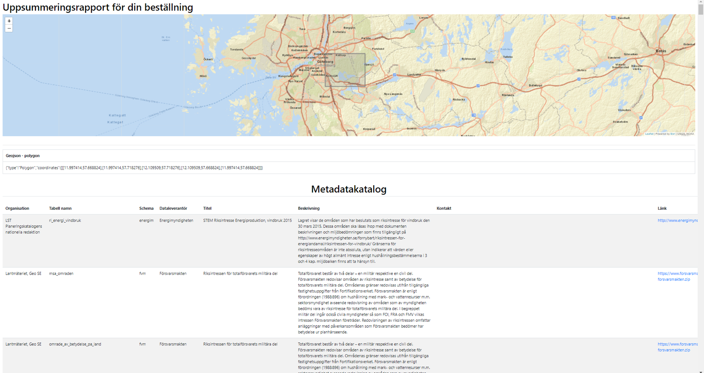

Internship project
A work process in how to work with the implementation of metadata and automated flows.
Project Details / Background
During the fall of 2023 we had to reach out to organisations that worked with GIS in order to find ourselves an internship spot for 10 weeks! I got in touch with Felipe Verdú, group leader (and a GIS Guru!) at GIS & Remote Analysis at Norconsult AB, we discussed a bit about my previous academic background as a human geographer and what Ive already learned during the spring semester at Ocellus as well as what I wanted to delve into and learn more about. I mentioned that I was interested in learning more about QGIS and that I understood that FME was a useful program that is used quite a bit in the workplaces that work with GIS.
Since they use PostgreSQL databases on GIS & Remote Sensing and needed to populate metadata to the datasets they have in their main geodatabase, he suggested I look into a plug-in for QGIS called PgMetadata and that I could get back to him if it was interesting to me.
Working on popularizing and collecting metadata didn't sound like a fun map visualization project I had initially imagined, but what I was able to read was that this is an important work that many organizations working in both the public and private sectors have a great need for. I got in touch again and accepted the internship position.
Week 1-2
In the initial weeks, I delved into Norconsult's GIS/Remote Sensing department for my LIA. My tasks involved adding metadata to their database and creating a catalog of Sweden's open data. I learned about their Geopangea web service (where the metadata were to be merged) and gained insight in the strategies the team was working towards.
Image created by Bing image creator
Week 3-4
During these weeks, I discovered the convenience of downloading geodata information from Länsstyrelsens (County administrative board) "Geodatakatalog" into CSV files, streamlining the process. I explored Sweden's Data Portal for metadata and investigated API calls for extraction. Developing an FME workflow for CSV with XML links was a significant achievement.

An example of how to download metadata to a CSV-file from Geodatakatalogen

Here is a sample of a workflow in FME where I extracted metadata from a CSV file
×

Week 5-6
These weeks involved a deep dive into metadata standards like DCAT-AP and ISO 19139, understanding their roles in data representation. I also began exploring HTML report generation for metadata cataloging in FME. It was a period of exploring various methods to organize and filter metadata effectively.

Here is an example of how DCAT-AP metadat can look like when structured inside an XML-file

A workflow for filtering and organizing metadata
Week 7-8
In this phase, I expanded metadata sources and returned focus to linking metadata to Norconsult's geodatabase. Utilizing the Inspire Geoportal for missing metadata sources was crucial. Revisiting webscraping methods for metadata link compilation was another key achievement.

My huge workflow with different sources running into the HTML report generator

An example of metadata from the Inspire Geoportal
Week 9-10
The final weeks were dedicated to linking metadata to datasets in PostgreSQL using FME. I developed a process for Geopangea's summary reports, integrating metadata effectively. These weeks also involved understanding and bridging the differences between metadata standards like ISO 19139 and DCAT-AP.

An example of how the summary report looked like
Summary
Throughout the internship, I explored tools such as FME, QGIS, and ArcGIS for metadata tasks. I gained a solid understanding of metadata standards like ISO 19139, DCAT-AP, and RDF. Creating efficient workflows for automating metadata extraction and processing was a significant accomplishment. The internship culminated in successfully linking metadata across different standards and handing over completed tasks to the project's next phase.